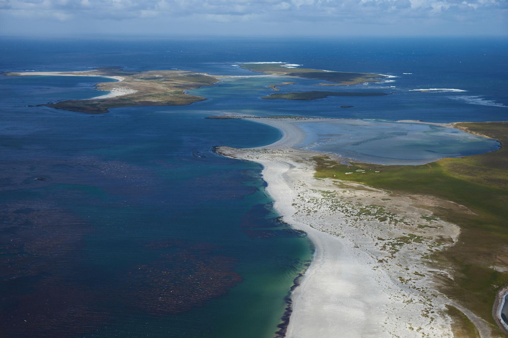

Archivo audiovisual
Documentales, cortometrajes y producciones independientes sobre Malvinas.
Consultar archivo →Biblioteca Digital de Malvinas
Un espacio colectivo de encuentro, consulta y participación para conocer, investigar y compartir producciones audiovisuales sobre Malvinas y el Atlántico Sur.
Explorar biblioteca
Cuatro espacios para acceder a contenidos, participar y producir conocimiento sobre Malvinas.
Documentales, cortometrajes y producciones independientes sobre Malvinas.
Consultar archivo →Compartí tus producciones y participá en la circulación de cortometrajes estudiantiles.
Enviar producción →Explorá Malvinizados, una experiencia interactiva para aprender y acercarte a la historia de Malvinas.
Jugar ahora →Documentos históricos, investigaciones, fotografías, mapas y materiales educativos.
Consultar biblioteca →Esta biblioteca digital propone un espacio de acceso, intercambio y circulación de materiales sobre Malvinas. Busca acercar la historia a la comunidad universitaria y promover nuevas miradas y producciones audiovisuales.
Universidad Nacional de Pilar
Tecnicatura Universitaria en Realización Audiovisual
Seminario: Malvinas: una causa nacional
Julian N. Robasio
Futuro Técnico en Realización Audiovisual
Al docente Mariano Minestrelli, por su acompañamiento en el seminario.